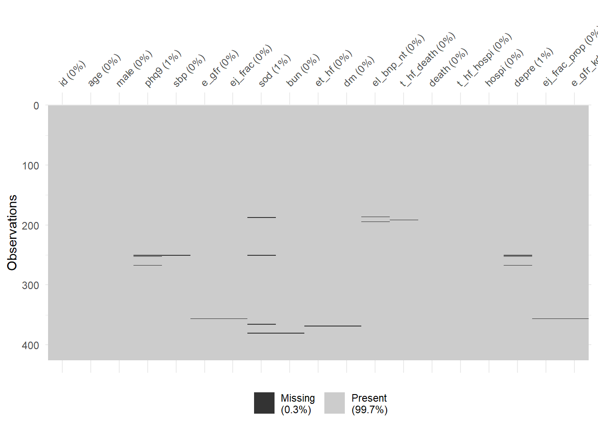
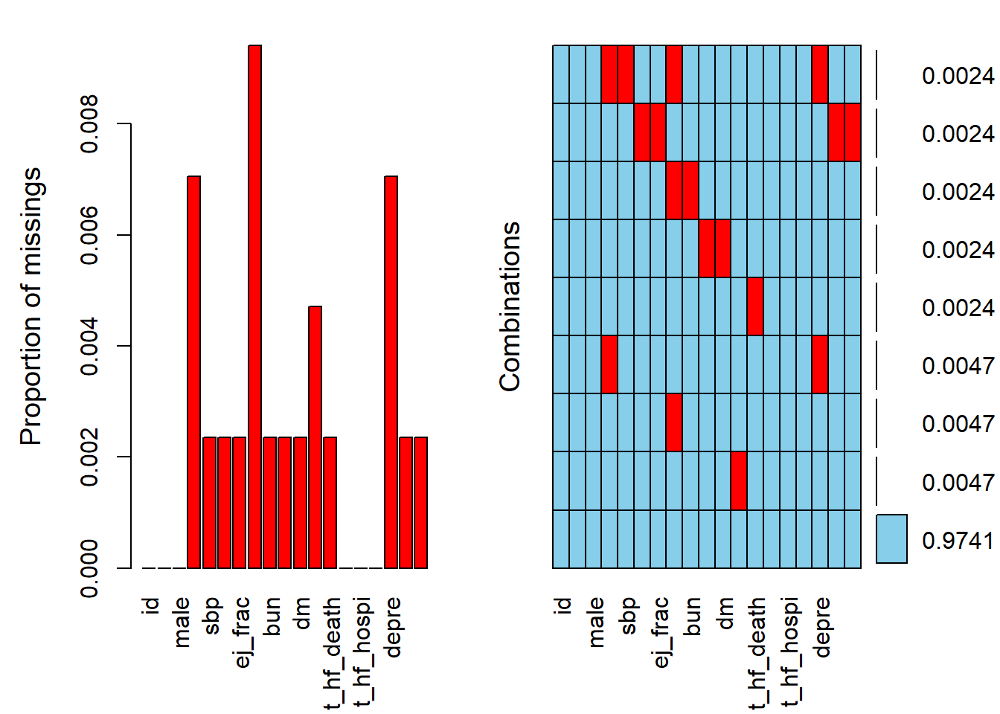
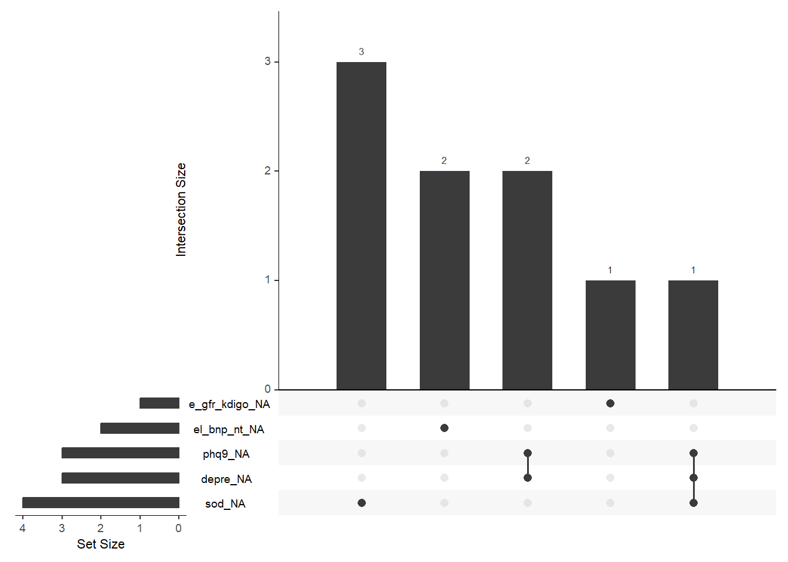
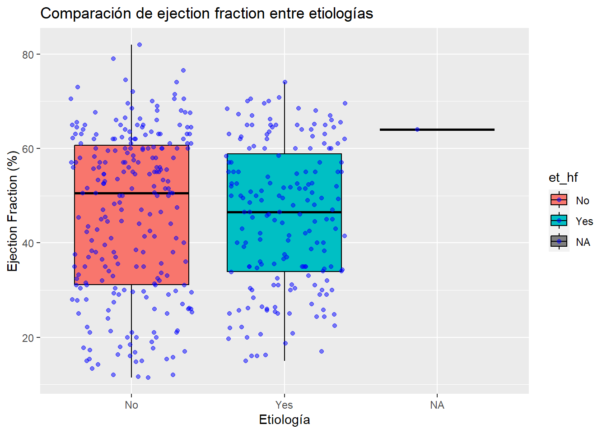
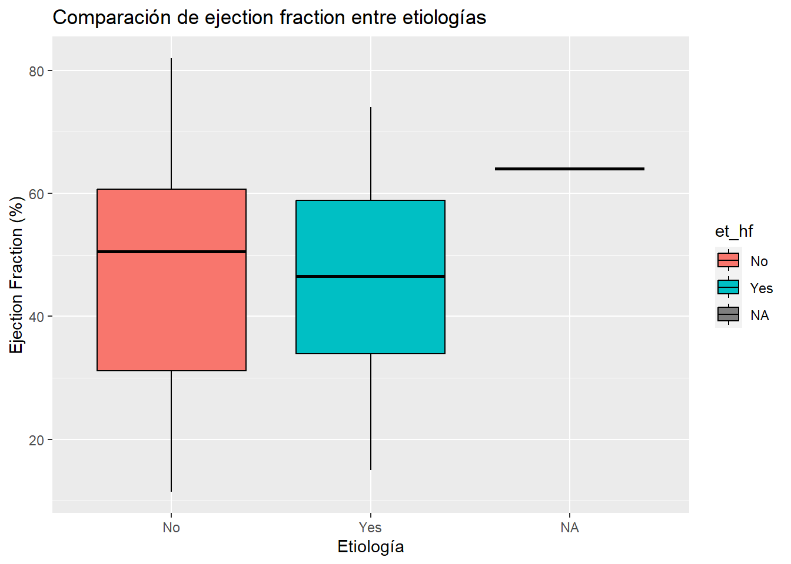

Code
datos_crudos <- import("pone_0158570_s002_modified.xlsx") Para este problem set 1, procesaremos los datos del artículo titulado “Comorbid Depression and Heart Failure: A Community Cohort Study” y publicado en la revista Plos One (doi: https://journals.plos.org/plosone/article?id=10.1371/journal.pone.0158570).
Hemos modificado ligeramente los datos originales para agregarles algunos problemas que permitan enfrentar problemas de calidad de datos.
En este problem set 1 nos centraremos solo en manejo de datos y análisis inicial de datos incluyendo gráficos. Todos los ejercicios requieren que usted haga algún tipo de comentario personal, ya sea describir los resultados observados o comentar el proceso / razonamiento seguido.
Es importante que se respondan con comentarios, no solo código! La pregunta que no tiene comentarios solo valdrá 25% del puntaje total.
Use la plantilla denominada: Problem_Set1_ApellidoPaterno_ApellidoMaterno_Nombre.qmd ubicada en la carpeta compartida Enlace aquí.
Deberá enviar al siguiente correo electrónico percys1991@gmail.com una carpeta comprimida o compartida por Drive / Onedrive /Dropbox con los siguientes archivos:
Cargue los paquetes que usará. Comentar con # al lado de cada paquete un resumen breve de para qué lo usarán. Tip: Use library()
Nota: Todos los paquetes que usará deberán estar en este chunk, no en otro chunk posterior
Importe los datos denominados "pone.0158570.s002_modified.xlsx" que se encuentran en la carpeta compartida Enlace aquí. Llame a los datos importados: “datos_crudos”.
datos_crudos <- import("pone_0158570_s002_modified.xlsx") Haga un inspección global de los datos
#datos_crudos %>% characterize()
#head(datos_crudos)
datos_crudos %>% glimpse()Rows: 428
Columns: 16
$ id <dbl> 11, 12, 13, 15, 16, 18, 1…
$ `Age (years)` <dbl> 93, 99, 83, 86, 84, 85, 8…
$ `Male (1=Yes, 0=No)` <dbl> 0, 1, 1, 1, 1, 0, 1, 0, 1…
$ `PHQ-9` <dbl> 1, 8, 4, 4, 3, 3, 2, 0, 3…
$ `Systolic BP (mm Hg)` <dbl> 145, 115, 121, 113, 142, …
$ `Estimated glomerular filtration rate` <dbl> 46.35246, 32.82785, 57.82…
$ `Ejection fraction (%)` <dbl> 60.50000, 65.00000, 65.00…
$ `Serum sodium (mmol/l)` <dbl> 137, 140, 141, 141, 137, …
$ `Blood urea nitrogen (mg/dl)` <dbl> 26, 75, 28, 47, 32, 44, 4…
$ `Etiology HF(1=Yes, 0=No)` <dbl> 1, 1, 0, 0, 0, 1, 1, 0, 0…
$ `Prior diabetes mellitus` <dbl> 1, 0, 0, 1, 1, 0, 0, 0, 0…
$ `Elevated level of BNP/NT-BNP (1=Yes, 0=No)` <dbl> 1, 1, 1, 1, 1, 1, 1, 1, 1…
$ `Time from HF to Death (days)` <dbl> 679, 74, 730, 730, 730, 4…
$ `Death (1=Yes, 0=No)` <dbl> 1, 1, 0, 0, 0, 1, 1, 0, 0…
$ `Time from HF to hospitalization (days)` <dbl> 134, 74, 224, 5, 730, 8, …
$ `Hospitalized (1=Yes, 0=No)` <dbl> 1, 0, 1, 1, 0, 1, 1, 1, 1…datos_crudos %>% skim()| Name | Piped data |
| Number of rows | 428 |
| Number of columns | 16 |
| _______________________ | |
| Column type frequency: | |
| numeric | 16 |
| ________________________ | |
| Group variables | None |
Variable type: numeric
| skim_variable | n_missing | complete_rate | mean | sd | p0 | p25 | p50 | p75 | p100 | hist |
|---|---|---|---|---|---|---|---|---|---|---|
| id | 0 | 1.00 | 311.56 | 175.99 | 11.00 | 156.75 | 320.00 | 462.25 | 612.00 | ▇▇▇▇▇ |
| Age (years) | 0 | 1.00 | 73.54 | 13.18 | 21.00 | 65.00 | 76.00 | 84.00 | 99.00 | ▁▂▃▇▅ |
| Male (1=Yes, 0=No) | 0 | 1.00 | 0.57 | 0.50 | 0.00 | 0.00 | 1.00 | 1.00 | 1.00 | ▆▁▁▁▇ |
| PHQ-9 | 3 | 0.99 | 4.78 | 4.89 | 0.00 | 1.00 | 4.00 | 7.00 | 25.00 | ▇▃▁▁▁ |
| Systolic BP (mm Hg) | 1 | 1.00 | 124.04 | 23.01 | 64.00 | 108.00 | 122.00 | 139.00 | 214.00 | ▂▇▆▂▁ |
| Estimated glomerular filtration rate | 2 | 1.00 | 57.14 | 22.89 | 5.54 | 43.12 | 55.67 | 71.54 | 166.36 | ▃▇▅▁▁ |
| Ejection fraction (%) | 1 | 1.00 | 46.10 | 16.44 | 11.50 | 32.17 | 49.33 | 60.00 | 82.00 | ▃▆▆▇▂ |
| Serum sodium (mmol/l) | 4 | 0.99 | 139.14 | 3.32 | 126.00 | 137.00 | 139.00 | 141.00 | 148.00 | ▁▁▇▇▂ |
| Blood urea nitrogen (mg/dl) | 2 | 1.00 | 29.38 | 15.28 | 0.00 | 19.00 | 26.00 | 36.00 | 119.00 | ▇▇▂▁▁ |
| Etiology HF(1=Yes, 0=No) | 1 | 1.00 | 0.43 | 0.50 | 0.00 | 0.00 | 0.00 | 1.00 | 1.00 | ▇▁▁▁▆ |
| Prior diabetes mellitus | 2 | 1.00 | 0.39 | 0.49 | 0.00 | 0.00 | 0.00 | 1.00 | 1.00 | ▇▁▁▁▅ |
| Elevated level of BNP/NT-BNP (1=Yes, 0=No) | 2 | 1.00 | 0.72 | 0.45 | 0.00 | 0.00 | 1.00 | 1.00 | 1.00 | ▃▁▁▁▇ |
| Time from HF to Death (days) | 2 | 1.00 | 641.55 | 186.87 | 5.00 | 730.00 | 730.00 | 730.00 | 730.00 | ▁▁▁▁▇ |
| Death (1=Yes, 0=No) | 0 | 1.00 | 0.24 | 0.43 | 0.00 | 0.00 | 0.00 | 0.00 | 1.00 | ▇▁▁▁▂ |
| Time from HF to hospitalization (days) | 0 | 1.00 | 328.59 | 285.21 | 1.00 | 68.50 | 224.50 | 730.00 | 730.00 | ▇▃▂▁▆ |
| Hospitalized (1=Yes, 0=No) | 0 | 1.00 | 0.71 | 0.46 | 0.00 | 0.00 | 1.00 | 1.00 | 1.00 | ▃▁▁▁▇ |
#datos_crudos %>% describe()Procese los datos según el siguiente diccionario:
En un solo pipeline, haga lo siguiente:
datos_crudos %>%
rename(
age = "Age (years)",
male = "Male (1=Yes, 0=No)",
phq9 = "PHQ-9",
sbp = "Systolic BP (mm Hg)",
e_gfr = "Estimated glomerular filtration rate",
ej_frac = "Ejection fraction (%)",
sod = "Serum sodium (mmol/l)",
bun = "Blood urea nitrogen (mg/dl)",
et_hf = "Etiology HF(1=Yes, 0=No)",
dm = "Prior diabetes mellitus",
el_bnp_nt = "Elevated level of BNP/NT-BNP (1=Yes, 0=No)",
t_hf_death = "Time from HF to Death (days)",
death = "Death (1=Yes, 0=No)",
t_hf_hospi = "Time from HF to hospitalization (days)",
hospi = "Hospitalized (1=Yes, 0=No)"
) -> datos_cleandatos_clean %>%
mutate(et_hf = recode(et_hf, "1" = "Yes", "0" = "No"), #anti - nuevo
el_bnp_nt = recode(el_bnp_nt , "1" = "Yes", "0" = "No"),
death = recode(death , "1" = "Yes", "0" = "No"),
hospi = recode(hospi, "1" = "Yes", "0" = "No")
) -> datos_cleanAsignar “With/Without depressive symptoms” a la variable phq9
datos_clean %>%
mutate(
depre = case_when(phq9 > 5 ~ "With depressive symptoms",
phq9 <= 5 ~ "Without depressive symptoms",
TRUE~as.character(NA)
)
)-> datos_cleanConvertir ej_frac a fraccion
datos_clean %>%
mutate(ej_frac_prop = ej_frac/100
)-> datos_cleandatos_clean %>%
mutate(
e_gfr_kdigo = case_when(e_gfr >= 90 ~ "G1-Normal or hight ",
e_gfr >=60 & e_gfr<90 ~ "G2-Midly decraesed",
e_gfr >=45 & e_gfr<60 ~ "G3a-Midly to moderately decraesed",
e_gfr >=30 & e_gfr<45 ~ "G3b-Moderately to severely decraesed",
e_gfr >=15 & e_gfr<30 ~ "G4-Severely decraesed",
e_gfr < 15 ~ "G5-Kidney failure",
TRUE~as.character(NA)
)
)-> datos_cleanIdentifique duplicados
datos_clean %>% get_dupes()No variable names specified - using all columns. id age male phq9 sbp e_gfr ej_frac sod bun et_hf dm el_bnp_nt t_hf_death
1 11 93 0 1 145 46.35246 60.5 137 26 Yes 1 Yes 679
2 11 93 0 1 145 46.35246 60.5 137 26 Yes 1 Yes 679
3 612 54 0 25 134 40.64405 55.0 141 77 No 1 Yes 694
4 612 54 0 25 134 40.64405 55.0 141 77 No 1 Yes 694
death t_hf_hospi hospi depre ej_frac_prop
1 Yes 134 Yes Without depressive symptoms 0.605
2 Yes 134 Yes Without depressive symptoms 0.605
3 Yes 9 Yes With depressive symptoms 0.550
4 Yes 9 Yes With depressive symptoms 0.550
e_gfr_kdigo dupe_count
1 G3a-Midly to moderately decraesed 2
2 G3a-Midly to moderately decraesed 2
3 G3b-Moderately to severely decraesed 2
4 G3b-Moderately to severely decraesed 2datos_clean %>% get_dupes(id) id dupe_count age male phq9 sbp e_gfr ej_frac sod bun et_hf dm el_bnp_nt
1 11 2 93 0 1 145 46.35246 60.5 137 26 Yes 1 Yes
2 11 2 93 0 1 145 46.35246 60.5 137 26 Yes 1 Yes
3 595 2 84 0 3 127 47.32015 74.0 142 17 No 0 Yes
4 595 2 84 0 3 127 NA 74.0 142 NA No NA Yes
5 612 2 54 0 25 134 40.64405 55.0 141 77 No 1 Yes
6 612 2 54 0 25 134 40.64405 55.0 141 77 No 1 Yes
t_hf_death death t_hf_hospi hospi depre ej_frac_prop
1 679 Yes 134 Yes Without depressive symptoms 0.605
2 679 Yes 134 Yes Without depressive symptoms 0.605
3 730 No 85 Yes Without depressive symptoms 0.740
4 NA No 85 Yes Without depressive symptoms 0.740
5 694 Yes 9 Yes With depressive symptoms 0.550
6 694 Yes 9 Yes With depressive symptoms 0.550
e_gfr_kdigo
1 G3a-Midly to moderately decraesed
2 G3a-Midly to moderately decraesed
3 G3a-Midly to moderately decraesed
4 <NA>
5 G3b-Moderately to severely decraesed
6 G3b-Moderately to severely decraesedTip: Puedes usar distinct()
datos_clean <- distinct(datos_clean)
datos_clean %>% get_dupes()No variable names specified - using all columns.No duplicate combinations found of: id, age, male, phq9, sbp, e_gfr, ej_frac, sod, bun, ... and 10 other variables [1] id age male phq9 sbp
[6] e_gfr ej_frac sod bun et_hf
[11] dm el_bnp_nt t_hf_death death t_hf_hospi
[16] hospi depre ej_frac_prop e_gfr_kdigo dupe_count
<0 rows> (or 0-length row.names)Tip: Puedes usar slice() o filter()
datos_clean %>% get_dupes(id) id dupe_count age male phq9 sbp e_gfr ej_frac sod bun et_hf dm el_bnp_nt
1 595 2 84 0 3 127 47.32015 74 142 17 No 0 Yes
2 595 2 84 0 3 127 NA 74 142 NA No NA Yes
t_hf_death death t_hf_hospi hospi depre ej_frac_prop
1 730 No 85 Yes Without depressive symptoms 0.74
2 NA No 85 Yes Without depressive symptoms 0.74
e_gfr_kdigo
1 G3a-Midly to moderately decraesed
2 <NA>datos_clean %>%
distinct(id,.keep_all = TRUE) -> datos_clean
datos_clean %>% get_dupes(id)No duplicate combinations found of: id [1] id dupe_count age male phq9
[6] sbp e_gfr ej_frac sod bun
[11] et_hf dm el_bnp_nt t_hf_death death
[16] t_hf_hospi hospi depre ej_frac_prop e_gfr_kdigo
<0 rows> (or 0-length row.names)Identifique datos perdidos
datos_clean %>% vis_dat()
datos_clean %>% vis_miss()
#paquete VIM
datos_clean %>% aggr(numbers=TRUE)
#paquete naniar
datos_clean %>% gg_miss_upset()
Haga las siguientes consultas (“queries”) con los datos limpios (renombrados, etiquetados y sin duplicados)
datos_clean %>%
filter(age >= 50 & age <= 55) %>%
select(id, phq9,age) %>%
arrange(age) id phq9 age
1 255 2 50
2 283 3 50
3 561 8 50
4 602 3 50
5 232 2 51
6 321 4 51
7 409 6 51
8 508 0 51
9 517 8 51
10 528 7 51
11 477 7 52
12 212 10 53
13 236 1 53
14 378 3 53
15 505 18 53
16 581 2 53
17 214 13 54
18 340 0 54
19 398 7 54
20 489 0 54
21 563 1 54
22 612 25 54
23 504 0 55
24 522 13 55
25 554 2 55datos_clean %>%
filter(et_hf==1) %>%
select(id, ej_frac,sod,bun,et_hf)[1] id ej_frac sod bun et_hf
<0 rows> (or 0-length row.names) #arrange(age)datos_clean %>%
filter(male==0 & death==1 & phq9>=10) %>%
select(age,phq9,sbp,depre,e_gfr_kdigo) %>%
arrange(age)[1] age phq9 sbp depre e_gfr_kdigo
<0 rows> (or 0-length row.names)datos_clean %>%
filter(male==1 & et_hf==1 & phq9>=10) %>%
select(t_hf_death,age,phq9,sbp,depre,e_gfr_kdigo) %>%
arrange(t_hf_death)[1] t_hf_death age phq9 sbp depre e_gfr_kdigo
<0 rows> (or 0-length row.names)Haga los siguientes gráficos:
ggplot(datos_clean,
aes(x = et_hf ,
y = ej_frac,
fill=et_hf)) +
geom_boxplot(position = "dodge", color = "black") +
geom_jitter(alpha = 0.5, color = "blue")+
labs(title = "Comparación de ejection fraction entre etiologías",
x = "Etiología",
y = "Ejection Fraction (%)")Warning: Removed 1 rows containing non-finite values (`stat_boxplot()`).Warning: Removed 1 rows containing missing values (`geom_point()`).
ggplot(datos_clean,
aes(x = et_hf ,
y = ej_frac,
fill=et_hf)) +
geom_boxplot(position = "dodge", color = "black") +
#geom_jitter(alpha = 0.5, color = "blue")+
labs(title = "Comparación de ejection fraction entre etiologías",
x = "Etiología",
y = "Ejection Fraction (%)")Warning: Removed 1 rows containing non-finite values (`stat_boxplot()`).
Tip: use geom_jitter() para los puntos dispersos. Más info aquí: https://ggplot2.tidyverse.org/reference/geom_jitter.html
Tip: use geom_jitter() para los puntos dispersos. Más info aquí: https://ggplot2.tidyverse.org/reference/geom_jitter.html
Exporte los datos a los siguientes formatos. Llame a los datos exportados: “datos_limpios”